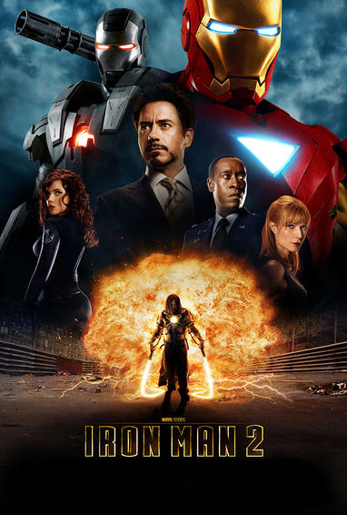

Genius inventor Tony Stark continued his father Howard Stark’s weaponry business after his parents’ untimely deaths and flew it to even greater heights of innovation. While in Afghanistan to demonstrate a new missile for the U.S. military, Stark’s convoy came under fire by a terrorist group known as the Ten Rings and he was severely wounded. Taken prisoner by the group, Stark awoke in their headquarters to learn that shrapnel near his heart had nearly cost him his life, but swift action by scientist and fellow prisoner Ho Yinsen—who had inserted a powerful electromagnet in Stark’s chest—would prolong it temporarily.
Stalling his captors after they demanded he build them a new weapon, Stark replaced the magnet with the RT, a miniature version of a device originally designed by his father, the Arc Reactor. Furthermore, he and Yinsen created a crude suit of armor which could provide them the means with which to escape. The suit worked as planned, though Yinsen sacrificed himself in order to allow Tony enough time to power it up to fight their terrorist captors.
MOVIES
SOLO
| IRON MAN 1
| IRON MAN 2
| IRON MAN 3
|
 |
 |
 |